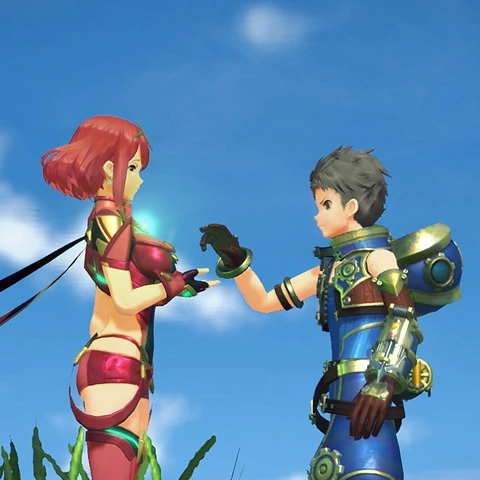

Publishing Info
-
Published by: Nintendo of America Inc.
-
Developed by: Monolith Software, Inc.
-
Released: Dec, 2017
Description
Alrest is a world composed of giant beasts, the Titans, who eternally roam a sea of clouds surrounding the
World Tree.
The people of this world live on the backs of the Titans alongside Blades, weaponized life forms who are
awakened from crystals and bonded to their summoner until either dies.
The protagonist of this game is a boy named Rex, who lives on the back of a Titan he calls Gramps
and makes
his living by salvaging ancient treasures that have sunk below the clouds.
When a salvaging job goes awry, Rex finds himself bonded to Pyra, a legendary Blade called the
Aegis. [...]

Game Categories
- Genre: Role-playing(RPG)
- Perspective: 3rd-person (Other)
- Visual: Free camera
- Art: Anime/Manga
- Pacing: Real-time
- Gameplay: Action RPG, Japanese-style RPG(JRPG), Sandbox/ open world
- Setting: Fantasy
Quote
Xenoblade Chronicles 2 is an extraordinary game that stays true to the ideal, classic RPG experience.
Monolith Soft has meticulously crafted a typical boy-meets-girl and save-the-world story into an endearing tale that feels fresh.
-- https://www.rpgsite.net/review/6409-xenoblade-chronicles-2-review